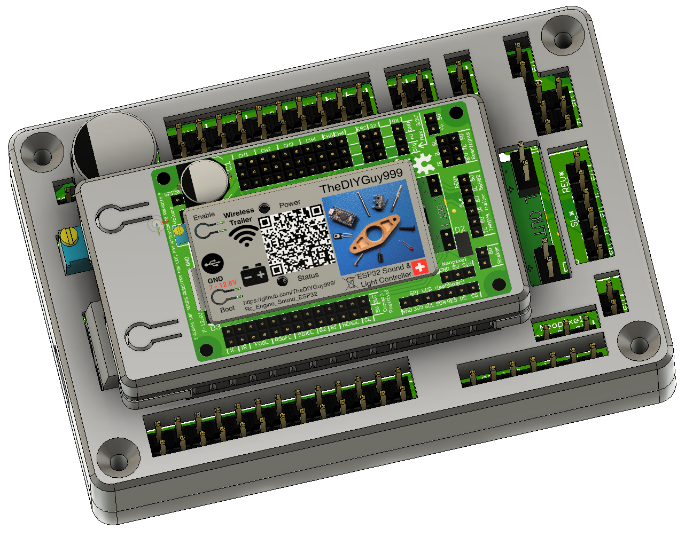
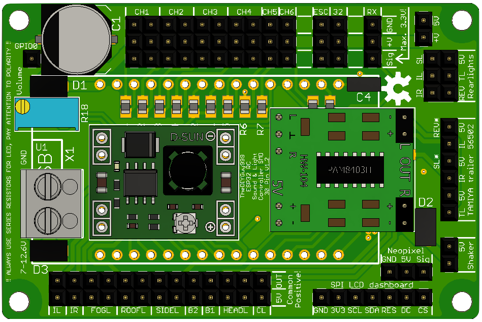
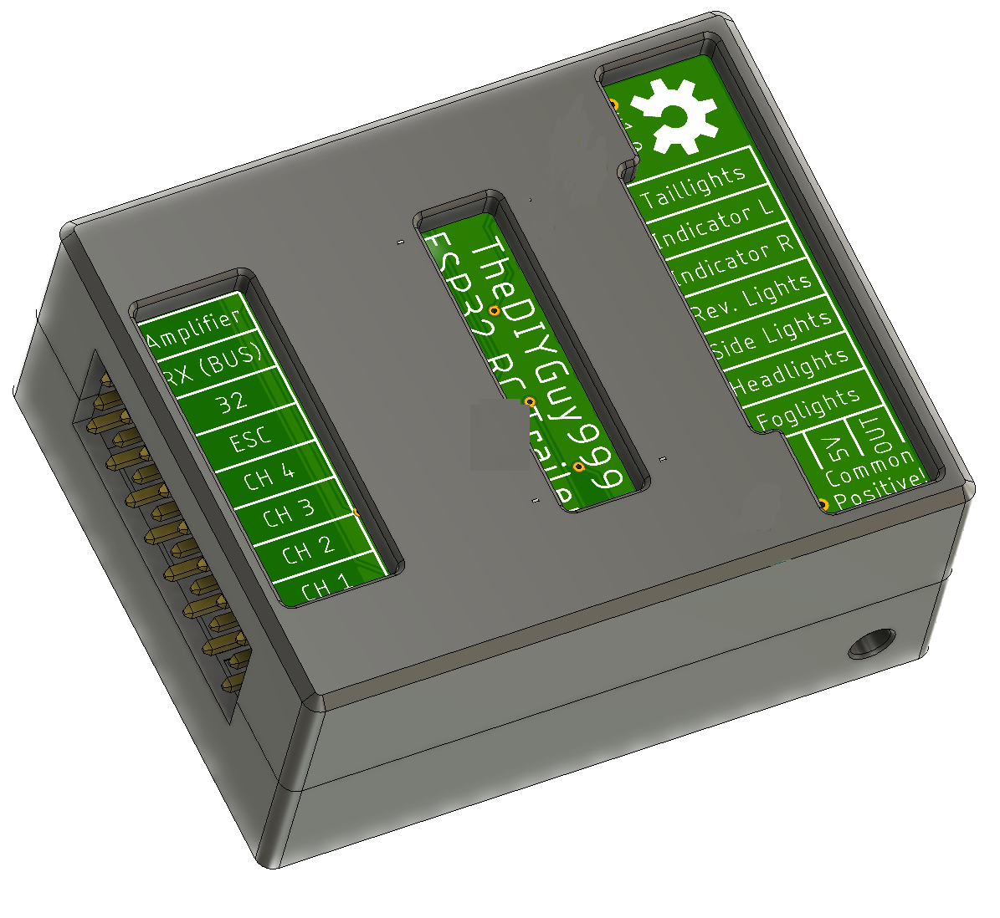
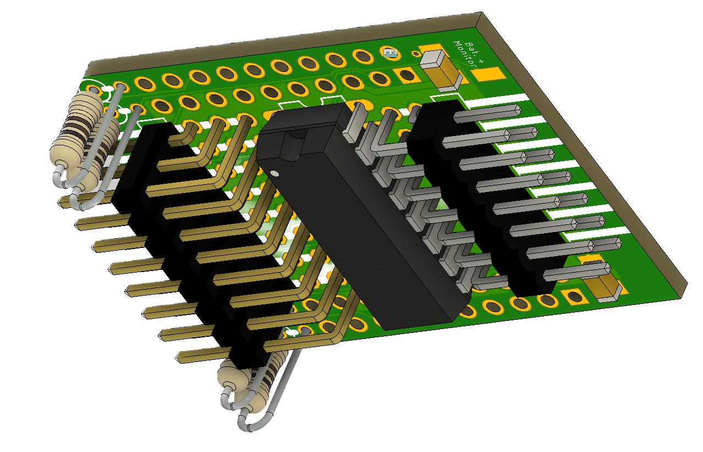
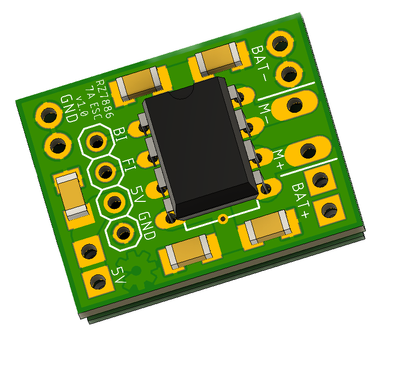

Welcome to the Products & Manuals Website of TheDIYGuy999!

ESP32 Sound and Light Controller
Ideal for 1:14 scale TAMIYA trucks or 1:10 scale crawlers


Order your Hardware here
Quick Start Manual PDF
Schematic PDF
Full GitHub Repository
GitHub Change Log
Support Forum
Video on how to assemble it
ESP32 Wireless Trailer Controller
Also usable as sound controller, if an external 5V supply and an external amplifier are used


Order your PCB here
Schematic PDF (please read carefully)
Full GitHub Repository
RZ7886 7A ESC for ESP32 Sound and Light Controller and ESP32 Wireless Trailer Controller
3A switch mode BEC, only for use with my controllers, max. stall current 7A, very good drag brake. Suitable up to 3S battery.
The additional wires connect to: white to 32, red (optional) to battery monitor input of the ESP32 Wireless Trailer Controller


Order your PCB and read the assembling manual here
Video on how the first prototype works
Schematic PDF